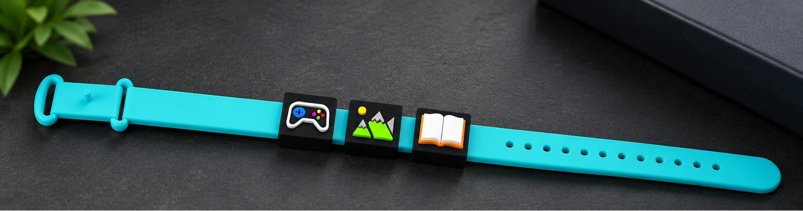
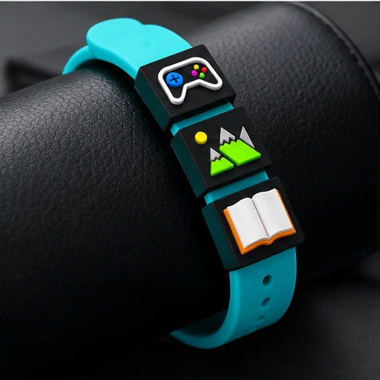
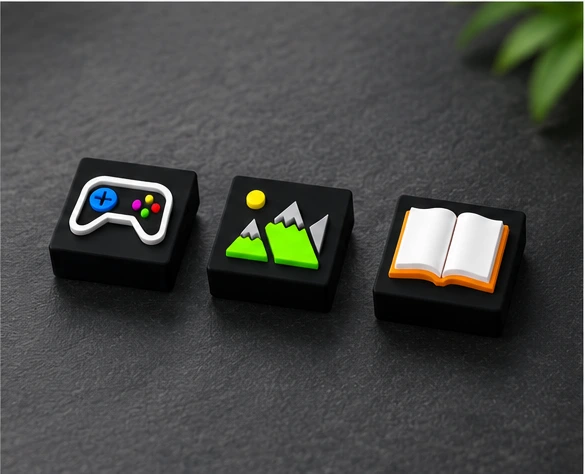

Вырази себя
Собери на браслете символы того, что любишь.
БОЛЬШЕ, ЧЕМ АКСЕССУАР
Для тех, кто открытНоси то, что тебя увлекает.
Браслет с клиперами расскажет о тебе
и даст повод для первого «привет».

01 / ИДЕЯ
Любимая книга, походы в горы или игры до ночи. У каждого есть то, о чём хочется поговорить. Но как заметить своего человека в толпе?
«Знакомства на Ладони» превращают увлечения в маленькие символы на браслете. Увидел знакомый интерес — нашёл тему для разговора.
02 / БРАСЛЕТ И КЛИПЕРЫ
Браслет — основа.
Сменные клиперы — твоя история.

Клиперы — это сменные декоративные заклёпки. Выбирай символы своих увлечений и меняй их вместе с настроением.
На сайте представлены сгенерированные визуализации концепции. Финальный вид и характеристики изделия могут отличаться.
ЧТО РАССКАЖЕШЬ О СЕБЕ?

03 / КАК ЭТО РАБОТАЕТ
Собери на браслете символы того, что любишь.
Обрати внимание на клиперы других людей — возможно, вас увлекает одно и то же.
Спроси о любимой игре, книге или путешествии. Тема уже есть.
Браслет — повод для разговора. Знакомься с уважением к личным границам.
ДЛЯ СЕБЯ / B2C
Хочешь браслет для себя или в подарок? Расскажи, какие клиперы тебе нравятся. Уточним доступность, стоимость и варианты получения в личном ответе.
Обсудить личный заказ ↗ДЛЯ БИЗНЕСА / B2B
Фестивали, студенческие встречи и сообщества по интересам — места, где особенно легко найти своих.
В проекте предусмотрены браслеты для организаторов и тематические клиперы для участников. В планах — дизайн с символикой событий и сообществ.
05 / О ПРОЕКТЕ
Создаём аксессуар для самовыражения
и новых знакомств в реальной жизни.
Никита Мисуно
Санкт-Петербург
Победитель «Студенческого стартапа»
В основе проекта — разработка дизайна браслетов и клиперов, настройка 3D-печати и сотрудничество с организаторами мероприятий. Следующий шаг — превратить концепцию в продукт для повседневного общения.
06 / СВЯЗАТЬСЯ С НАМИ
По вопросам продукта и сотрудничества:
misuno.company@mail.ru ↗+7 (911) 053-05-30 ↗ИНН 7805826057
198152, г. Санкт-Петербург, вн. тер. г. муниципальный округ Автово, ул. Краснопутиловская, д. 21, литера А, помещ. 7-Н, офис 1-06
Редакция от 19 сентября 2026 года. Политика относится к обращениям о продукции «Знакомства на Ладони».
ООО «МИСУНО», ИНН 7805826057. Адрес: 198152, г. Санкт-Петербург, вн. тер. г. муниципальный округ Автово, ул. Краснопутиловская, д. 21, литера А, помещ. 7-Н, офис 1-06. По вопросам обработки данных: misuno.company@mail.ru.
Оператор обрабатывает имя, телефон и/или электронную почту, сведения о компании или мероприятии и содержание обращения, которые пользователь сообщает в заявке. Цель — рассмотрение заявки, ответ пользователю и согласование состава, количества и условий предполагаемого заказа. Не указывайте паспортные, платёжные, медицинские и другие сведения, не нужные для ответа.
Основание обработки заявки — отдельное согласие пользователя. При заключении договора необходимые для его исполнения данные могут обрабатываться на соответствующем законном основании. Обработка включает сбор, запись, систематизацию, накопление, хранение, уточнение, извлечение, использование, блокирование, удаление и уничтожение с использованием средств автоматизации и без них. Согласие на обращение не включает рекламные рассылки или публичное распространение данных.
Форма размещена в сервисе «Яндекс Формы». Введённые в неё сведения передаются сервису напрямую, без сохранения в базе данных этого сайта. ООО «МИСУНО» получает доступ к ответам в кабинете сервиса; содержание заявок может поступать на рабочую почту misuno.company@mail.ru. Яндекс является самостоятельным оператором данных и обрабатывает их по условиям сервиса и политике конфиденциальности. При загрузке сайта и встроенного сервиса их поставщикам также передаются технические сведения, необходимые для работы, включая IP-адрес и сведения о браузере.
Обработка на основании согласия продолжается до завершения рассмотрения заявки и согласования условий предполагаемого заказа либо до отзыва согласия — в зависимости от того, что наступит раньше. При достижении цели или отзыве согласия данные удаляются в установленные законом сроки, если отсутствуют иные законные основания для их дальнейшей обработки. При заключении договора сроки хранения необходимых документов определяются применимыми требованиями законодательства.
Вы можете запросить сведения об обработке ваших данных, их уточнение, блокирование или удаление, а также отозвать согласие. Направьте обращение на misuno.company@mail.ru или по адресу оператора. Для отзыва укажите тему «Отзыв согласия на обработку персональных данных» и контакт, использованный в заявке. Обращения рассматриваются в установленные законом сроки. Действия оператора можно обжаловать в Роскомнадзоре или суде.
Данные используются только для указанных целей. Доступ предоставляется лицам, которым он необходим для обработки обращений. Оператор обязан обеспечивать конфиденциальность, ограничивать доступ и принимать предусмотренные законодательством меры защиты персональных данных.